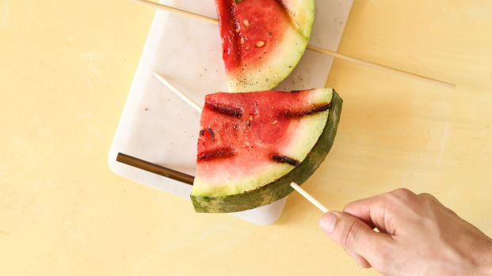
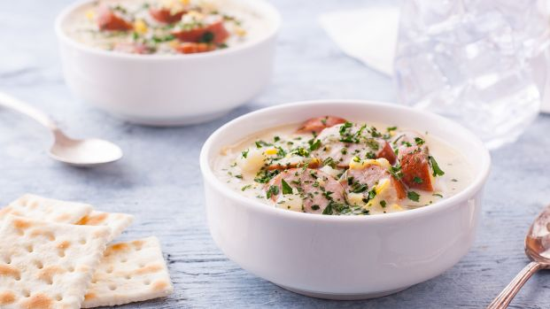
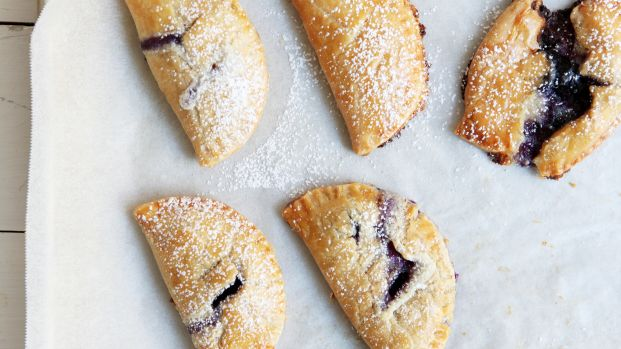

Watermelon
This might be the ultimate refreshing fruit of the summer. Whether you eat it on its own or off the grill, it never disappoints.
Corn
Eating fresh sweet corn just screams summer. Toss it on the grill and steam it inside its husk, add it into a soup or fix up a batch of cornbread.
Blueberries
Blueberry recipes don't stop at cobbler and fruit salad. They also lend their tangy flavor well to turnovers, pies and grain salads.